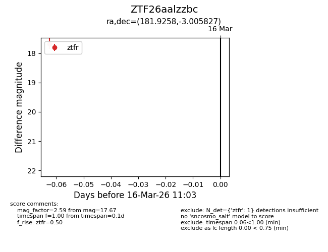
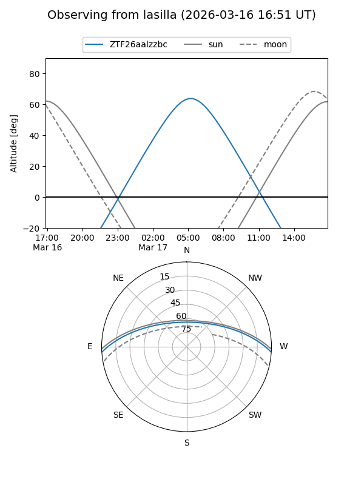
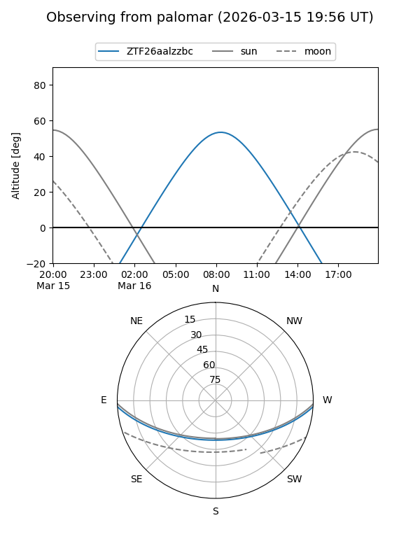

ZTF26aalzzbc
Target ZTF26aalzzbc at 2026-03-16 11:05
Aliases and brokers:
FINK: link
Lasair: link
ALeRCE: link
alt names
ZTF26aalzzbc (ztf,fink_ztf)
Coordinates:
equatorial (ra, dec) = 181.9258,-3.00583
equatorial (HMS+DMS) = 12:07:42.19,-03:00:20.98
galactic (l, b) = (281.9445,+58.07267)
Flags:
Photometry:
last ztfr=17.67
1 ztfr detections
Lightcurve

Visibility


Additional plots